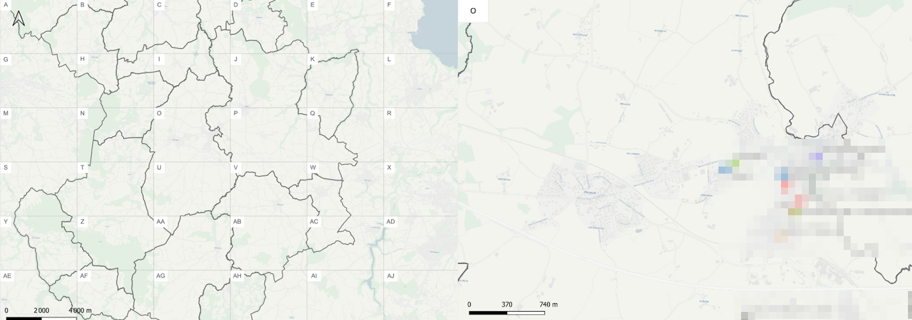
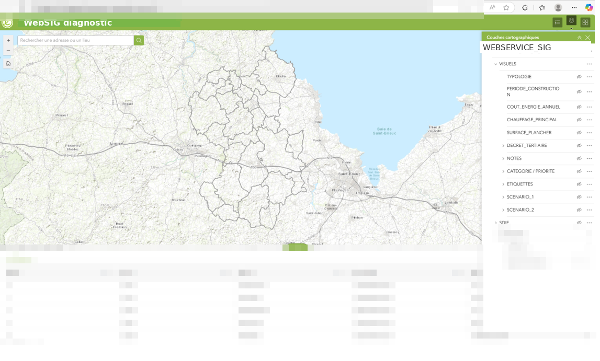
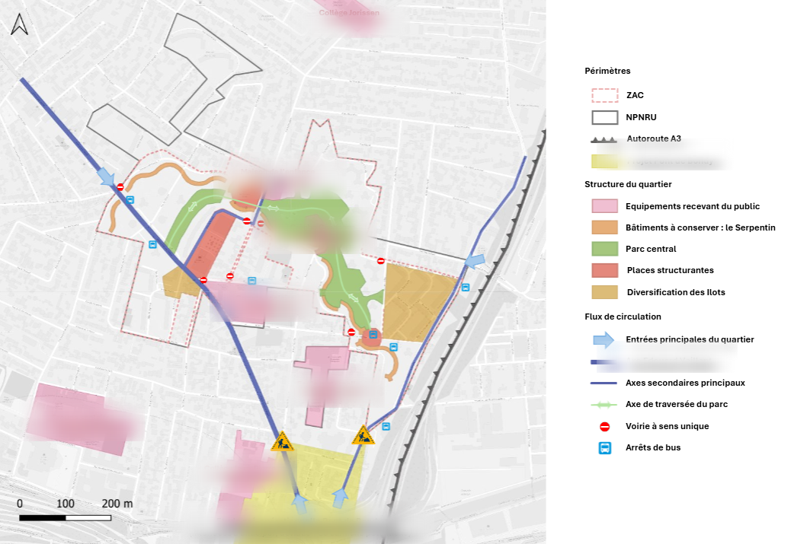
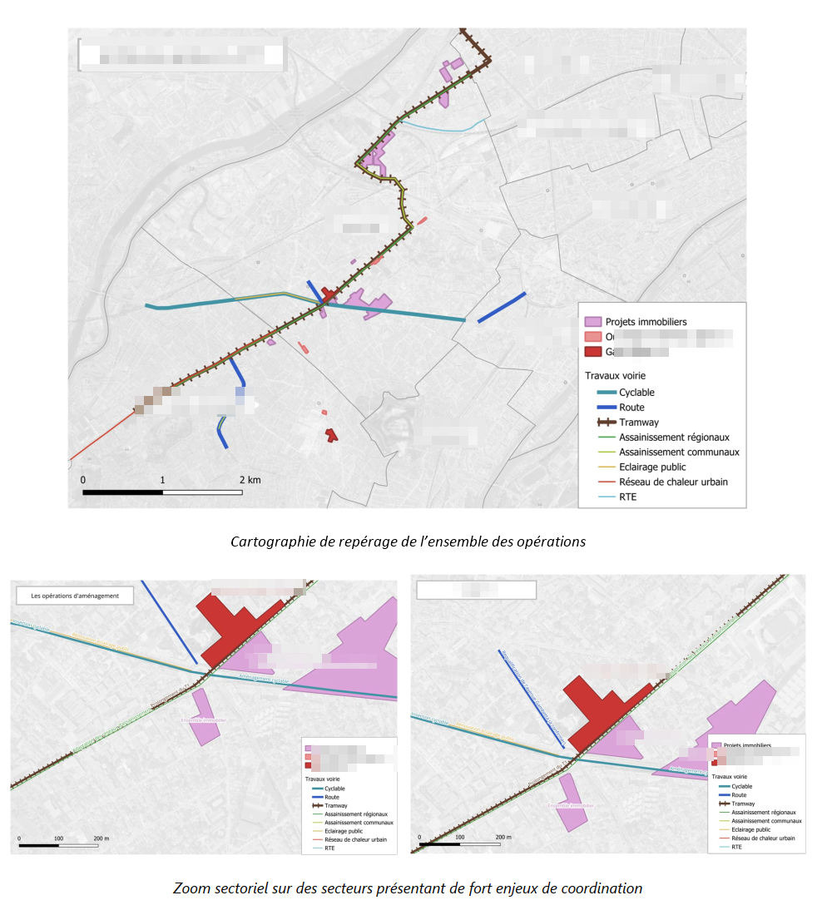
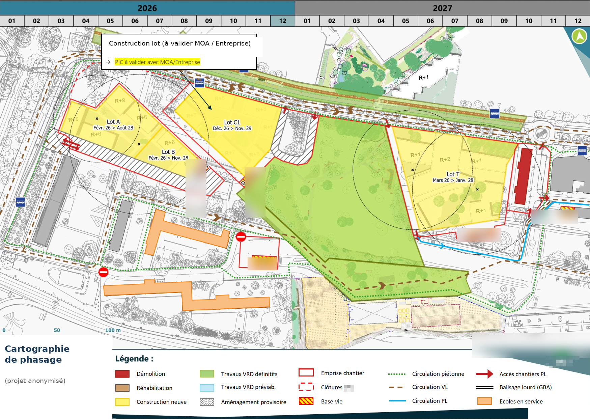

06 63 93 15 59 · mathis.burgevin@gmail.com · LinkedIn
Étudiant en dernière année à Polytech Tours (aménagement du territoire). Mes deux stages m'ont permis de pratiquer le SIG au quotidien, et j'aimerais aujourd'hui pouvoir en faire pleinement mon métier.
Quelques réalisations SIG dont je suis l'auteur ou le co-auteur, présentées à l'appui de ma candidature. Pour chacune, l'objectif, mon rôle et les outils utilisés. Certaines données ont été anonymisées.
Stage chez Egis, Nantes – schéma directeur immobilier

Atlas cartographique généré automatiquement, avec vue d'ensemble en cases et cartes de détail par secteur.

WebSIG publié sous ArcGIS Online : couches thématiques et table attributaire consultables en ligne.
Stage chez Egis, Montreuil – réponse à un appel d'offre (marché public)

Carte de synthèse d'un quartier en renouvellement urbain (structure, équipements, circulations).
Stage chez Egis, Montreuil – réponse à un appel d'offre (marché public)

Repérage des opérations le long d'un projet de transport : vue d'ensemble et zooms sectoriels.
Stage chez Egis, Montreuil – coordination urbaine et inter-chantiers

Cartographie de phasage de chantiers : emprises, installations et circulations dans le temps.
En complément de ces réalisations, ma formation à Polytech Tours m'a permis de pratiquer QGIS et ArcGIS de manière récurrente, en approfondissant certaines fonctionnalités : automatisation de traitements avec ModelBuilder, et analyses spatiales à partir de modèles de terrain (pente, exposition, etc.).
La première étape, ce serait de cadrer le besoin avec les services concernés : savoir exactement ce qu'on veut suivre (le linéaire réalisé chaque année, le type d'aménagement, le quartier, éventuellement le coût) et ce que les élus attendent de leur côté. C'est important de clarifier le besoin avant de produire, parce que toute la suite en dépend.
Ensuite je préparerais la couche de données des aménagements cyclables sous QGIS ou ArcGIS, en m'appuyant autant que possible sur les référentiels et données déjà disponibles à la Ville, et en la structurant proprement (année de réalisation, type, longueur, statut), avant de la publier sur ArcGIS Online. Cette couche servira de base commune à la carte et au tableau de bord.
Après, je publierais une carte web sous ArcGIS Online, avec un filtre temporel par année et une symbologie distinguant les types d'aménagement cyclable (piste, bande, voie verte...). Et en parallèle, un tableau de bord sous ArcGIS Dashboards destiné aux élus, avec les chiffres clés : les kilomètres réalisés dans l'année et le total cumulé depuis le début, la répartition par type d'aménagement et par quartier pour vérifier que le développement est équilibré sur le territoire, et si la donnée existe le budget engagé.
Le plus important, c'est surtout de garder la donnée à jour. Vu qu'on suit les aménagements faits chaque année, il faut savoir dès le début qui la met à jour et quand, par exemple à chaque fin d'année. Et je laisserais un document pour que quelqu'un d'autre puisse reprendre le suivi si besoin.
Aperçu illustratif de la sortie destinée aux élus (chiffres fictifs) — la carte grand public repose sur la même couche, avec filtre temporel et symbologie par type.